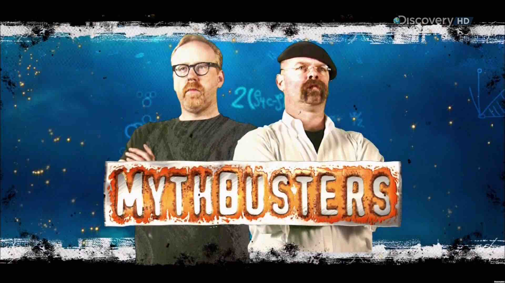

Aristotle wrote a book called History of Animals. He described the physical characteristics of hundreds of species, their parts, their movements, their reproductive habits. It was careful, detailed, and mostly correct. It became the foundation of zoology for nearly two thousand years.
According to a story that circulates widely, in classrooms, in popular science books, in articles about critical thinking, Aristotle stated in that book that spiders have six legs. Medieval monks, copying manuscripts by hand across centuries, reproduced the claim without question. Libraries across Europe confirmed it. Six legs. No one checked. Aristotle had said it.
Then came the Enlightenment. Entomologists started looking at actual spiders. They counted. Eight legs. Anyone who cares to know can still count for themselves.
The story usually ends there, with a lesson about authority and the importance of checking things yourself. So: what does this story tell you?
Think about it. Then enter the password to find out.
The story is false.
There is no evidence that Aristotle ever wrote that spiders have six legs. Historians of science have looked. The claim does not appear in History of Animals or in any other text attributed to Aristotle. Medieval monks did not copy it across centuries because there was no such claim to copy. The whole narrative appears to be a modern invention, the kind of vivid, morally satisfying story that spreads easily because it fits what we already believe.
A story used to warn against accepting claims without checking has itself been accepted, repeated, and taught without checking.
You just did it. Three paragraphs about Aristotle and spiders, and you assumed they were true. Not because you verified them. Because they came from a plausible source. Because they fit. Because checking did not occur to you.
The lesson stands. It just applies to itself.
In ancient Alexandria, doctors argued about how to know anything. The rationalists said: start from first principles. Understand the theory of the body, and the prescription follows. The empiricists thought first principles were a guess. Did the treatment work? Try it. Observe. Try again.
One of the empiricists' leading voices was a Greek physician who became known as Sextus Empiricus, named after the school he practiced in. His position was simple: suspend judgment on any claim that cannot be tested by observation. Do not accept something as true because an authority said so. "We don't know why the drug works," the empiricists said. "We know that it does."
The world does not owe us explanations. It does give us feedback.

In the 1920s, Karl Popper read Freud, Adler, and Marx. He noticed that all three theories had something in common. They could explain everything.
A patient acts aggressively? The theory explains it. A patient acts passively? The theory explains that too. The predicted revolution doesn't materialize? Historical conditions were not yet ripe. Everything confirmed the theory. Popper found this suspicious.
"A theory that is compatible with every possible observation is not a scientific theory. It is a dogma." , Karl Popper
Einstein's theory of relativity made a specific prediction. Light bends around massive objects like the sun, by a precise, calculable amount. If you measured it and the numbers were wrong, the theory was wrong. Einstein was betting on a prediction that could fail.
In 1919, Arthur Eddington measured starlight deflection during a solar eclipse. The numbers matched. They could have not.
Popper's criterion: a claim is scientific only if an observation could prove it wrong. A claim that is at risk.
Popper's criterion is clean. Pierre Duhem pointed out a wrinkle: you never test a single hypothesis in isolation. You test it together with a web of auxiliary assumptions. When an experiment fails, you cannot know whether the main theory is wrong or one of the auxiliary assumptions is. W.V.O. Quine extended this: any theory can be saved from refutation by adjusting something else in the web of beliefs. It makes falsifiability messier than Popper's original formulation suggests.
Below are eight statements. Sort each one: is it a claim that could, in principle, be disproved by an observation? Drag each card into the correct zone. Some are harder than they look.
Done? Enter the password to see the answers.
Run an A/B test. Two groups, two subject line lengths, one metric. You can be wrong.
Design a randomized trial. Assign participants to exercise and control groups, measure sleep quality before and after. The claim is at risk.
Train the same model on datasets of increasing size. Plot test error. The naive version of this claim, "always," turns out to be false for certain model-data combinations.
Evaluate both on the same held-out test set. One number will be larger. The result can go either way.
What observation would disprove it? If a tragedy happens, there was a reason, we just don't know it yet. If something good happens, there was a reason. Nothing can threaten the claim.
Any observation fits. Orderly universe, evidence of purpose. Chaotic universe, mysterious ways. The claim is not in range of any experiment.
If lucky people tend to have good outcomes, the claim explains nothing new. If unlucky people succeed sometimes, it was not their lucky day. The claim is infinitely flexible.
"Understands" has no agreed definition, no agreed measurement, no agreed threshold. Behavioral tests have been designed. Every time a model passes one, the goalposts move. Sound familiar?
When you train a machine learning model, you fit it to observed data. The model finds patterns. Given enough capacity, it can fit any training dataset perfectly, including the noise, the outliers, the flukes. Evaluate it on the same data you trained it on and you learn nothing.
The train/test split is Popper's falsification criterion, applied to predictive models. Hold back a portion of the data. Train on one part, evaluate on the other. The test set is the experiment. The test metric is the observation that can prove you wrong.
Overfitting is the ML version of Freudian analysis. A model that fits everything explains nothing. It has memorized the training data. Put it in front of new observations and it fails.
It gets worse with less data. Give a powerful model only a handful of examples and it will find elaborate patterns in the noise. It has to. There is nothing else to work with. Smart people do the same thing. Feed them one ambiguous signal and they will construct an entire theory around it. The model is not wrong to look for structure. The problem is that it found structure where there was none.
"99% accuracy" should prompt a question: on what data? A model that achieves 99% on its training set has not been tested. A model that achieves 85% on held-out data has. The second number is the one that matters.
Something that gets repeated with confidence. Now design the experiment that could disprove it.
Next week, keep a list. Every time you encounter a claim in the media, in advertising, in a conversation, ask one question: what observation would prove this wrong? Collect the ones that have no answer. Bring them to class.